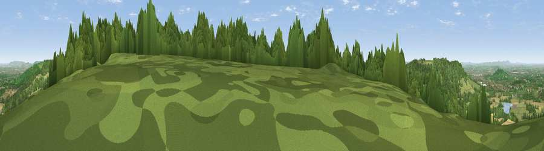

Viewpoint near Great Witcombe
#8393 in England · top 19% of its area beats it · near Great WitcombeWhere it is
The exact computed spot (SO 91225 13325). Click the marker for map links.
The view, rendered

A 360° render of this exact spot computed from the terrain model, tree cover and land cover — summer colours, afternoon light, calibrated against photographs of famous viewpoints. Real trees, hedges and buildings will differ in detail.
The panorama
Grey silhouette: terrain skyline in each direction (720 bearings, Earth curvature and refraction included). Dashed green: skyline with trees (+15 m) and buildings (+8 m) as obstacles. Blue strip: how far the ground is visible on each bearing.
Where the view opens
Wedge length = distance to the farthest visible ground on that bearing (vegetation-aware). Rings at 10, 25 and 50 km.
What fills the view
53% woodland · 32% grassland · 11% cropland · 3% built-up ·
Angular shares of the visible panorama (visual magnitude), not map area. Landscape diversity 0.47 (0–1 Shannon).
Key numbers
More beautiful places nearby
The staircase of upgrades: each row has a higher view potential than everything closer. Driving times are estimates from straight-line distance, calibrated against real road routing — check an actual route before setting out.
| Place | Direction | Drive | Score |
|---|---|---|---|
| Birdlip Hill | NE · 1 km | ~4 min | 71.7 |
| Viewpoint near Great Witcombe | WNW · 2 km | ~6 min | 80.5 |
| Nottingham Hill | NNE · 16 km | ~29 min | 80.9 |
| Viewpoint near Bredon's Norton | N · 27 km | ~43 min | 81.3 |
| Chase End Hill | NW · 27 km | ~43 min | 81.5 |
| Bredon Hill | N · 27 km | ~44 min | 83.0 |
| Millennium Hill | NNW · 30 km | ~48 min | 86.9 |
| Worcestershire Beacon | NNW · 35 km | ~53 min | 87.1 |
51.81848, -2.12871 · source: screening · position refined by local search. Computed location — check access rights before visiting.